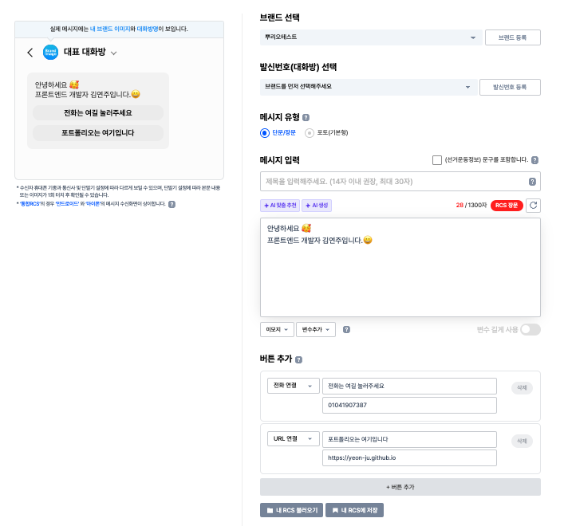
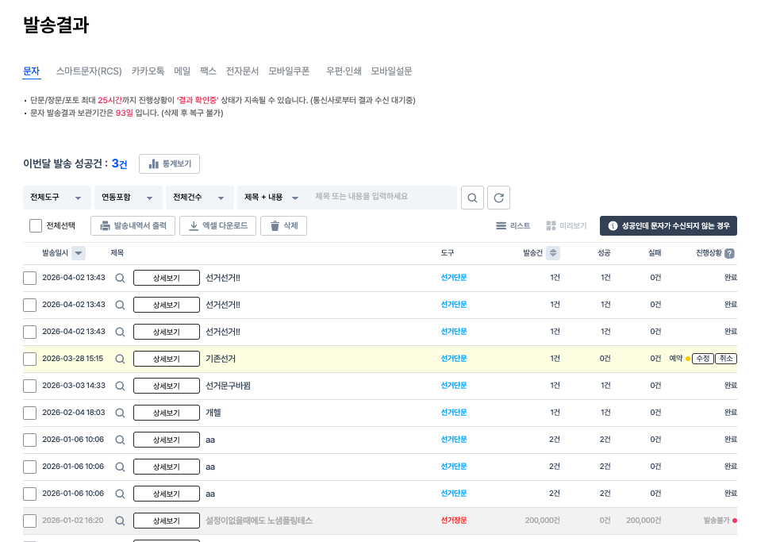
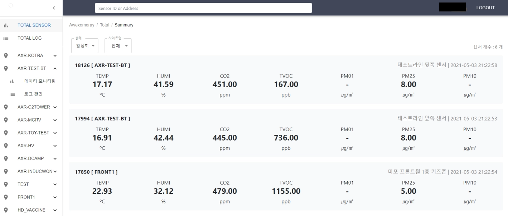
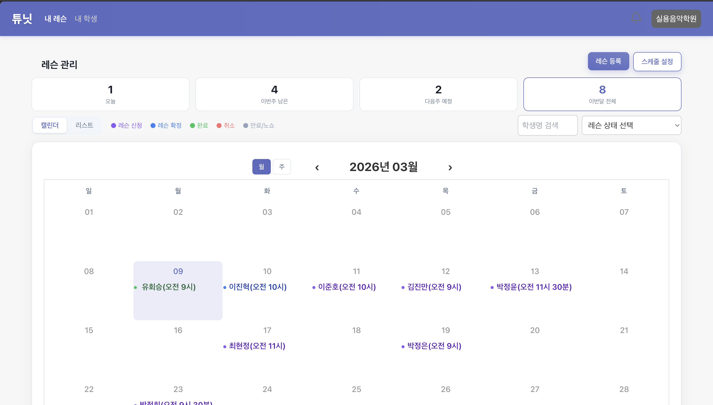

About
Projects

10개 이상의 UI 요소가 실시간 상호작용하는 RCS 메시지 편집기 신규 설계. 메시지 입력·미리보기 동기화·버튼 동적 구성 등 복잡한 도메인을 유지보수 가능한 구조로 구현.

문자 중심 발송 결과 화면을 복수 매체로 확장. 유형만 다른 중복 함수와 if-else 분기 폭증을 매체 객체 기반 공통 파이프라인으로 재설계.

공기질·설비 데이터 모니터링 대시보드를 기획·개발·배포까지 1인 주도. 프론트 외 백엔드·인프라·센서 수집까지 모르는 기술은 직접 학습하며 전 영역 구축.

복잡한 예약 도메인을 프론트엔드 아키텍처 레벨에서 안정적으로 모델링하는 것을 목표로 설계.
Career & Education
Skills